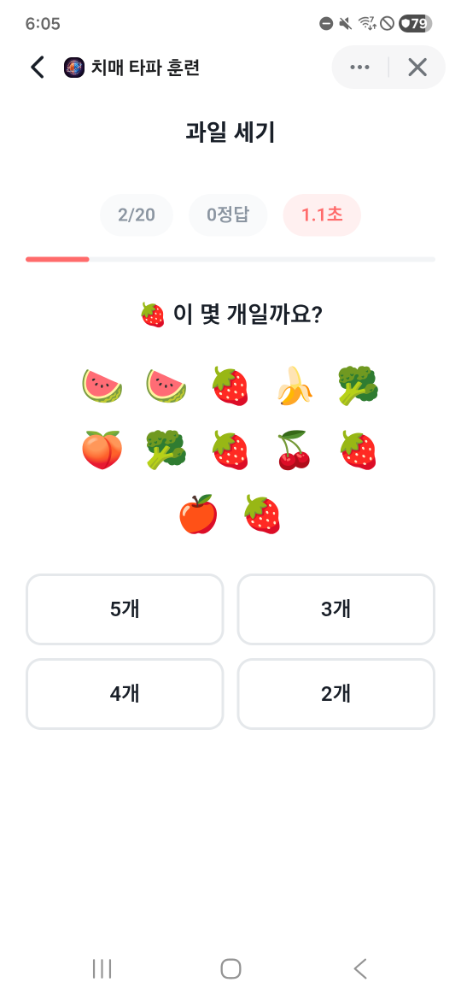

치매 타파 훈련 · 짧게 집중하고 싶을 때분명 셌는데.
분명 셌는데.
딸기가 몇 개였지?
과일 세기부터 순서 기억하기까지, 8가지 미니 게임. 남의 기록보다 방금 전 내 기록을 넘어보세요.
- 마음에 드는 미니 게임 고르기
- 안내에 따라 한 판 집중하기
- 점수와 내 기록 확인하기
링크가 열리지 않으면 토스 앱에서 치매 타파 훈련를 검색해 주세요.
광고 포함. 일상 게임이며 치매 등 질병의 진단·치료·예방 효과를 뜻하지 않아요.
